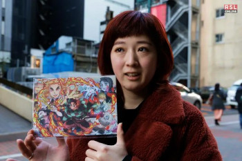

Koyoharu Gotouge: A Mente por Trás de Demon Slayer
Biografia
Koyoharu Gotouge é o pseudônimo da talentosa mangaká japonesa responsável pela criação de "Demon Slayer: Kimetsu no Yaiba". Lançado em 2016 na famosa revista Weekly Shōnen Jump, o mangá rapidamente se tornou um fenômeno global. Gotouge, que mantém sua vida pessoal em sigilo, revelando poucos detalhes sobre si, capturou a imaginação de milhões com uma narrativa envolvente que mistura ação, drama e o sobrenatural. "Demon Slayer" concluiu sua saga no mangá em 2020, mas seu legado continua a expandir-se através de animes, filmes e uma vasta gama de produtos licenciados, consolidando Gotouge como uma das figuras mais influentes na indústria do mangá e anime nos últimos tempos.

Segredos e Surpresas: Curiosidades Fascinantes de 'Demon Slayer'
Inspiração Histórica:
Embora "Demon Slayer" se passe em um mundo fictício cheio de demônios e caçadores, muitos dos locais, roupas e armas são inspirados no período Taisho do Japão (1912-1926), misturando elementos históricos com a narrativa fantasiosa
A Espada Nichirin:
As espadas Nichirin, usadas pelos caçadores de demônios, são forjadas a partir de um metal especial que absorve a luz solar, uma das principais fraquezas dos demônios. Cada espada muda de cor ao ser empunhada pela primeira vez, refletindo a personalidade e o poder de seu dono.
Respirações como Artes Marciais:
As técnicas de respiração usadas pelos personagens para combater demônios são baseadas em formas reais de artes marciais. Essas técnicas, no entanto, são elevadas a um nível fantasioso, permitindo aos usuários realizar feitos sobre-humanos.
A Popularidade Explosiva de Nezuko:
Nezuko Kamado se tornou um dos personagens mais adorados da série, não apenas por sua história trágica e vínculo com Tanjiro, mas também por sua representação única como uma demônio que luta contra sua própria natureza para proteger humanos.
Recordes de Vendas:
O mangá "Demon Slayer" quebrou inúmeros recordes de vendas, tornando-se uma das séries de mangá mais vendidas de todos os tempos. Isso culminou com o filme "Demon Slayer: Mugen Train" tornando-se o filme de maior bilheteria na história do Japão, ultrapassando até mesmo "A Viagem de Chihiro" de Hayao Miyazaki.
Influência Cultural:
"Demon Slayer" teve um impacto significativo não apenas na indústria do entretenimento, mas também na cultura popular japonesa e mundial. De parques temáticos a cafés e até mesmo trens decorados com temas da série, sua popularidade transcendeu os limites tradicionais do anime e do mangá.
Música Cativante:
A trilha sonora de "Demon Slayer", incluindo a música tema "Gurenge" por LiSA, desempenhou um papel crucial no sucesso do anime. A música tornou-se um hit global, quebrando recordes de streaming e vendas, e contribuindo significativamente para o reconhecimento da série em todo o mundo.